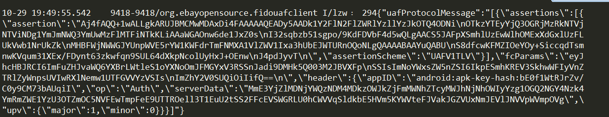

1.客户端请求fidoServer
DOMString[] keyIDs;
required DOMString finalChallenge;//FinalCallengeParams就是appID 和challenge,facetIdf的json字符串的信息(Base64b编码形成的)
Transaction[] transaction;//暂时为空
};
required DOMString assertionScheme;//UAF1VTLV
};
客户端发送userName给服务器
2.服务器返回客户端信息如下： 
和注册的过程一样：信息包含header[upv,severData,challenge,],appId,challenge，keyIDs
3、服务器的信息传递给了fido客户端，fidoClient做以下处理：
形成以下信息后，再向ASM发送消息：
dictionary AuthenticateIn {
required DOMString appID;DOMString[] keyIDs;
required DOMString finalChallenge;//FinalCallengeParams就是appID 和challenge,facetIdf的json字符串的信息(Base64b编码形成的)
Transaction[] transaction;//暂时为空
};
4.ASM收到 fidoClient发送的消息：
做以下操作：
1.找到对应的认证器
2.如果用户没有注册认证器，则告诉返回没有注册的响应字段
3.ASM要求认证器去检验用户的身份，如果用户的身份检验失败，则返回被拒绝的响应字段
4.生成KeyAcessToken的数值
5.用户认证器的自己的hash算法计算finalChallegne的摘要
6.如果是二因子的认证器，发现KeyIDs为空，则返回拒绝的响应字段
7.如果keyIDs不为空，如果为绑定类型的认证器，则通过AppId，KeyId去ASM的数据库中查找对应的KeyHandle,如果为非绑定类型的认证器，则直接把KeyId作为Keyhandle发送给认证器
8.生成向认证器请求的数据如下：
obejct{
TAG_UAFV1_SIGN_CMD
TAG_AUTHENTICATOR_INDEX//验证过程中为0001
TAG_FINAL_CHALLENGE
TAG_TRANSACTION_CONTENT//可能是空的
TAG_KEYHANDLE_ACCESS_TOKEN
TAG_USERVERIFY_TOKEN
TAG_KEYHANDLE
}
9.将上述信息发送给验证器
5.认证器收到消息后：
做如下操作：
1.更新KeyAcessToken的数值
2.查看用户的是否有取消操作的动作，如果有，则返回取消操作的动作
3.如果用户没有注册，则返回没有注册的验证信息
4.用验证器的内部密钥来解密KeyHandle的数值(注：如果是一因子的非绑定认证器：用KeyIds去匹配所有存储在认证器内部的KeyHandle)
5.用KeyAcessToken的数值来过滤第4步找到的所有的KeyHandle（比较两者的摘要是否一致）
6.经过过滤之后，如果KeyHandle的个数为零，则返回拒绝验证的操作码
7. 如果剩下的KeyHandle的个数的大于1
8.如果剩下的KeyHandle的等于1：
a.形成认证器返回的响应字段
b.产生以下的信息结构体：
obejct{
TAG_AAID//认证器的类型
TAG_ASSERTION_INFO//和每次操作的类型有关
TAG_FINAL_CHALLENGE// 对finalChanllegeParams的摘要信息
TAG_KEYID//KeyId(用来寻找KeyHandle)
TAG_COUNTERS// 签名的次数的计数器
TAG_PUB_KEY// 认证产生的公钥
TAG_SIGNATURE//用KeyHandle中的私钥形成的摘要
}
c.从b步骤的结构体中，在再次形成最后的结构体
object{
TAG_STATUS_CODE//响应字段
TAG_USERNAME//用户名(一因子的应该是在KeyHandle里面的)
TAG_KEYHANDLE// keyHandle(加密后的)
TAG_AUTHENTICATOR_ASSERTION//(步骤b中的信息结构体)
}
6.认证器返回给ASM的信息后：
ASM收到认证器的消息后，形成一下信息体，传递给fidoClient
dictionary AuthenticateOut {
required DOMString assertion;//认证器返回给ASM的信息[RegisterObject]的内容required DOMString assertionScheme;//UAF1VTLV
};
7.FidoClient 收到ASM的返回的信息,做如下操作：
形成信息体: RegisterOut{
Obejct Header//upv,op,appId,severData
FinalChanllege fcParams//拿给服务器去校验FinalChallege
RegisterOut args//ASM 返回给fidoClient的信息
}
}
然后发送给服务器

8.fido服务器验证信息的有效性:
1.先解析assertion 字段，得到签名字数的计数器，验证计数器是否一致，防止被克隆
2.再用公钥去验证整个签名信息的一致性,保证信息是客户端发送的
3.计算FinalChanllege fcParams的摘要数值，然后和发送过来的fc的摘要数值进行比较，如果一直，用户的验证是成功的.